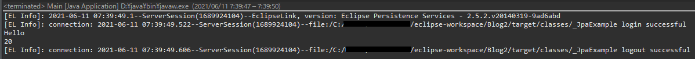

こんにちは。明月です。
この投稿はJPAを設定する方法に関する説明です。
Javaプログラムでデータベースのコネクション管理するフレームワークがあります。そのフレームワークを我々はORM(Object-relational-mapping)といいます。
以前、ORMフレームワークを使わなかった時、または使用頻度が少なかった時にはプログラムでSQL Connectionを組み立てソースに直接にSQLクエリを作成してデータベースからデータを取得しました。
その方法はプログラム管理する時に様々な問題があります。
例えば、データベースのテーブルを修正した場合、SQLクエリをStringタイプで作成したのでプログラムのコンパイルエラーやデバッグエラーが発生しません。そのため、大きいプロジェクトだっと思えば各SQLクエリを修正することがずいぶん大変だったんです。
また、Stringで作成したことなので、もしかして修正漏れがある場合、デバッグエラーで取れないので、実行中でエラーが発生します。
他の問題はReference管理です。SQLクエリ上でテーブル間にJoinして結果に合わせてEntityクラスを作成します。でも、Joinの状況によりクラスがたくさん生成される結果になります。そうすればクラスが多くなって管理が大変になるし、テーブル修正がある場合に作業が多いです。
個人的にこの２つの問題を解決するしデータベースのツリー構造のデータをプログラムのクラスタイプの連結リストタイプの構造に変換するフレームワークをORMフレームワークといいます。
JavaののORMフレームワークは種類が多いです。Hibernateということもあるし、DomaのSeasorということもあります。私の場合は昔ibatisというフレームワークも使ったことがあります。
いつからかは知りませんが、Java側ではJPA(Java Persistence API)というフレームワークがJavaの標準ORMに指定されました。最近はJava IDEツールのeclipseでJPAフレームワークを扱いやすく支援しています。
なので最近の雰囲気はJPAをORMに選択して使うことが標準になっています。
JPAを使うためにはmavenでライブラリを連結しなければならないです。
「pom.xml」で２つのライブラリを連結しましょう。
<!-- https://mvnrepository.com/artifact/org.eclipse.persistence/org.eclipse.persistence.jpa -->
<dependency>
<groupId>org.eclipse.persistence</groupId>
<artifactId>org.eclipse.persistence.jpa</artifactId>
<version>2.5.2</version>
</dependency>
<!-- https://mvnrepository.com/artifact/mysql/mysql-connector-java -->
<dependency>
<groupId>mysql</groupId>
<artifactId>mysql-connector-java</artifactId>
<version>5.1.41</version>
</dependency>
一番目のdependencyはJPAライブラリです。二番目のdependencyはmysql-connectorです。
私の場合はmariaDB(mysql)を使いつもりでmysql-connectorを連結しましたが、他のデータベースを使うならこのconnectorライブラリを当該なデータベースのライブラリに変わったらよいです。
projectでjpa projectで変換しましょう。


Platfromとconnectionを設定しましょう。


そしてadd connectionリンクを押下してeclipseのデータベースのコネクションを設定しなければならないです。以前に「eclipse」で「mariaDB(mysql)」を接続したことがなければ設定しなければならないです。


connectorの場合はmavenでupdateをしてライブラリをダウンロードしたことがあればmaven repositoryディレクトリにjarファイルがあります。
別にmaven設定をしなかったら、c:\(ウィンドウユーザパス)\.m2\repository\mysql\mysql-connector-java\5.1.41にあります。

コネクション連結が終わったらPlatformをEclipse 2.5.xに設定してtypeをDisable Library Configurationを設定します。

そして連結確認をした後にFinishボタンを押下するとsrc\META-INF\persistence.xmlが生成されています。
Javaプロジェクトでデータベースを連結して使うためにデータベースに優先テーブルを作成して連結しましょう。
-- test データベースに接続
use test;
-- 以前にテーブルがあれば一応削除
-- drop table info;
-- drop table user;
-- userテーブル生成
create table user(
id varchar(255) not null,
name nvarchar(255) not null,
primary key(id) - キー設定
);
-- info テーブル生成
create table info(
idx int not null auto_increment, -- 自動増加
id varchar(255) not null,
age int not null,
primary key(idx), -- キー設定
foreign key(id) references user(id) -- idはuserのidで連結
);
次は「persistence.xml」で戻ってコネクション情報を入力します。
<?xml version="1.0" encoding="UTF-8"?>
<persistence version="2.1"
xmlns="http://xmlns.jcp.org/xml/ns/persistence"
xmlns:xsi="http://www.w3.org/2001/XMLSchema-instance"
xsi:schemaLocation="http://xmlns.jcp.org/xml/ns/persistence http://xmlns.jcp.org/xml/ns/persistence/persistence_2_1.xsd">
<persistence-unit name="JpaExample">
<properties>
<!-- キャッシュ機能。これが「true」になっているとこのフレームワークを通ってないクエリは反映が遅くなる。 -->
<property name="eclipselink.query-results-cache" value="false" />
<!-- データベースの連結上のログレベル設定 -->
<property name="eclipselink.logging.level" value="INFO" />
<property name="eclipselink.logging.parameters" value="true" />
<!-- driver パッケージ設定 -->
<property name="javax.persistence.jdbc.driver" value="com.mysql.jdbc.Driver" />
<!-- database 設定 -->
<property name="javax.persistence.jdbc.url" value="jdbc:mysql://localhost:3306/test" />
<!-- 接続id -->
<property name="javax.persistence.jdbc.user" value="id" />
<!-- 接続password -->
<property name="javax.persistence.jdbc.password" value="password" />
</properties>
</persistence-unit>
</persistence>
persistence.xml設定を終わったらEntityクラスを作りましょう。
Entityクラスとはテーブルのデータを格納するためのデータクラスです。


データベースのテーブルがclassで作成されました。これから実際データベースからデータを取得しましょう。
-- userテーブルにデータを挿入
insert into user (id,name) values('nowonbun','Hello');
-- info テーブルにデータを挿入
insert into info(id,age) values('nowonbun',20);
import java.util.List;
import javax.persistence.EntityManager;
import javax.persistence.EntityManagerFactory;
import javax.persistence.Persistence;
import model.User;
import model.Info;
// 実行関数があるクラス
public class Main {
// 実行関数
public static void main(String... args) {
// FactoryManagerを生成する。JpaExampleはpersistence.xmlに宣言した名だ。
EntityManagerFactory emf = Persistence.createEntityManagerFactory("JpaExample");
try {
// Managerを生成する。
EntityManager em = emf.createEntityManager();
try {
// UserテーブルでnowonbunUserのIDを取得。
User user = em.find(User.class, "nowonbun");
// コンソール出力
System.out.println(user.getName());
// Userテーブルで連結しているInfoテーブルのデータを取得。
List infos = user.getInfos();
for (Info info : infos) {
// コンソール出力
System.out.println(info.getAge());
}
} finally {
// Managerを閉める。
em.close();
}
} finally {
// FactoryManagerを閉める。
emf.close();
}
}
}

ここまで基本「JPA」設定が完了しました。データベースからデータを取得してコンソールに出力することまで確認しました。
ここまで基本JPA設定は完了しましたが、実際のプロジェクトに使うようには様々な設定が必要です。具体的な設定する方法は次の投稿で説明します。
ここまでJPAを設定する方法に関する説明でした。
ご不明なところや間違いところがあればコメントしてください。
- [Java] 52. SpringフレームワークでDAOをFactory method Patternを利用して依存性注入する方法2019/10/17 07:15:48
- [Java] 51. SpringフレームワークでJPAを使い方(依存性注入@Autowired)2019/10/16 07:32:55
- [Java] 50. JPAプロジェクトでDAOクラスを作成する方法2019/10/15 20:12:35
- [Java] 49. JPAでトランザクション(transaction)を扱う方法と共通関数作成する方法(Observerパターン)2019/10/14 20:13:44
- [Java] 48. JPAでQueryを使う方法(JPQLクエリを作成する方法)2019/10/13 22:55:52
- [Java] 47. JPAのEntityクラスのリファレンス設定(cascade, fetch)2019/10/13 00:40:08
- [Java] 46. JPAのEntityクラスの基本設定(@GeneratedValue、 @ManyToMany)2019/10/11 07:30:14
- [Java] 45. JPAを設定する方法2019/10/10 07:29:43
- [Java] 44. Web Spring frameworkのviewで使うプログラム言語(JSTL) - XML2019/10/09 07:34:08
- [Java] 43. Web Spring frameworkのviewで使うプログラム言語(JSTL) - 関数、データベース2019/10/08 07:43:33
- [Java] 42. Web Spring frameworkのviewで使うプログラム言語(JSTL) - コア―、フォーマット2019/10/07 07:38:13
- [Java] 41. Web Spring webframeworkのControllerからajaxの要請する時、jsonタイプのデータを返却する方法2019/10/04 19:24:43
- [Java] 40. Web Spring frameworkでControllerを扱う方法2019/10/03 20:02:06
- [Java] 39. Spring Web Frameworkを利用してウェブサービスプロジェクトを作成する方法2019/10/02 21:00:22
- [Java] 38. Javaでウェブサービスプロジェクト(JSP Servlet)を作成する方法2019/10/01 21:48:08
- [CentOs] ジェンキンス(Jenkins)をインストールする方法2021/10/18 18:28:58
- [Project design] 詳細設計(インターフェース設計と抽象化作業)2021/10/18 18:23:15
- [Project design] 基本設計(画面設計とDB設計)2021/10/17 21:21:11
- [Design pattern] 1-4. デザインパターンの抽象ファクトリーパターン(Abstract factory pattern)2021/10/15 19:31:03
- [Project design] 要件定義(要求事項整理)2021/10/15 19:28:58
- [C#] 52. Reflection機能を使い方 - Variable2021/10/15 19:27:37
- [Project design] プロジェクトを工程(ウォーターフォール vs アジャイル)2021/10/14 18:36:04
- [C#] 51. Reflection機能を使い方 - Method2021/10/14 18:34:21
- [C#] 50. Reflection機能を使い方 - Class2021/10/13 18:34:13
- [C#] 49. Operator(演算子)のオーバーロードを使い方2021/10/12 18:28:42
- [C#] 48. IEnumerableとIEnumerator、そしてyieldキーワード2021/10/11 19:49:33
- [C#] 47. Nugetを使い方(外部ライブラリ)とデータベース(MariaDB(Mysql))を使い方、そしてトランザクション(Transaction)2021/10/08 18:58:57
- [Window] MariaDBをインストールする方法2021/10/08 18:56:05
- [C#] 46. データベース(MSSQL)に接続する方法2021/10/07 18:39:58
- [C#] 45. ネットワークソケット通信(Socket)を使い方2021/10/06 19:06:25